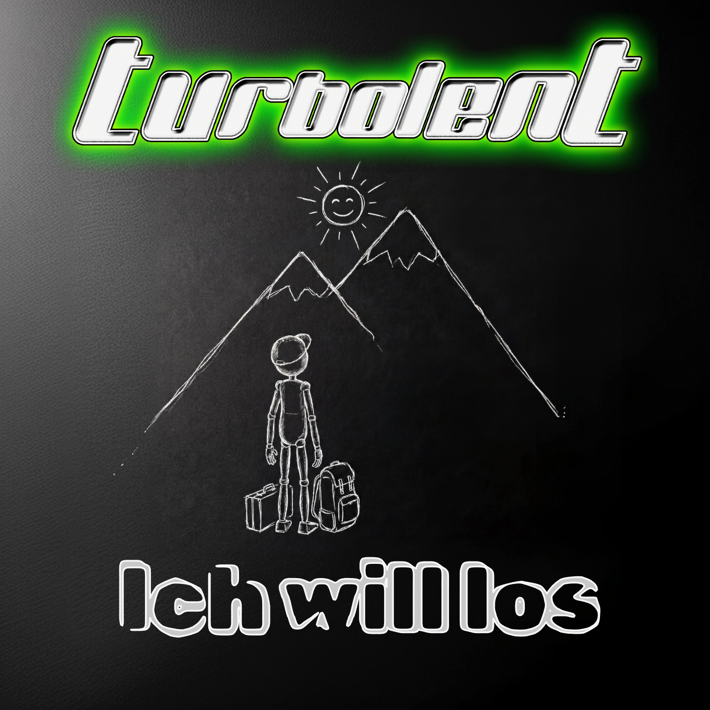

Review
TURBOLENT - Ich will los

Mit Pressetexten habe ich ja so meine Probleme.
Kaum taucht irgendwo das Wort Komfortzone auf, rechne ich schon damit, dass gleich noch ein Motivationscoach durchs Bild läuft und mir erklärt, warum ich morgens kalt duschen sollte.
Genau deshalb hatte "Ich will los" einen schweren Start.
Nicht wegen des Songs.
Wegen des Textes davor.
Zum Glück ist Musik nicht verpflichtet, so zu klingen wie ihre Pressemitteilung.
Denn TURBOLENT machen hier genau das, was sie seit Jahren machen: ehrlichen deutschsprachigen Rock-Punk ohne großes Theater.
Der Song will nach vorne. Das hört man. Und vor allem nimmt man der Band das ab.
Gerade das gefällt mir.
Es klingt nicht nach vier Leuten, die zwanghaft den nächsten Festivalhit schreiben wollten. Es klingt nach einer Band, die Spaß daran hatte, diesen Song aufzunehmen.
Der Refrain bleibt hängen. Nicht sofort auf nervige Art, sondern so, dass ich ihn ein paar Stunden später wieder im Kopf hatte. Das passiert mir längst nicht mehr bei jeder Veröffentlichung.
Natürlich könnte ich jetzt behaupten, das Ganze wäre mir zu sauber.
Ist es stellenweise auch.
Ein bisschen mehr Risiko hätte der Nummer gutgetan. Ein Moment, bei dem man denkt: "Okay, das war jetzt knapp."
Aber vielleicht bin ich da auch einfach verwöhnt.
TURBOLENT sind Freunde.
Eigentlich wäre das also die perfekte Gelegenheit, endlich mal hemmungslos draufzuhauen.
Hat nur einen Haken:
Der Song gibt das nicht her.
"Ich will los" erfindet das Rad nicht neu.
Richtig so.
Er macht einfach Spaß, hat Druck, einen eingängigen Refrain und genug Charakter, damit er nicht in der Masse verschwindet.
Vor allem aber nimmt sich die Band nicht wichtiger als den Song.
Das gefällt mir deutlich besser als jeder Pressetext über Selbstfindung, Aufbruch oder Komfortzonen.
Also ja.
Ich hätte die Jungs gerne ein bisschen mehr geärgert.
Heute kommen sie damit leider durch.
Rülps.